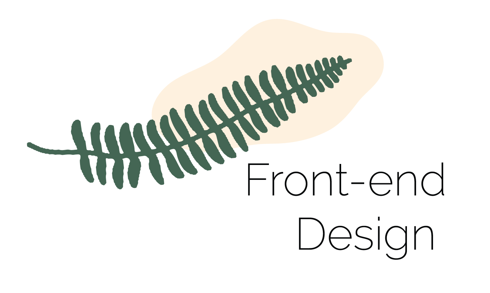
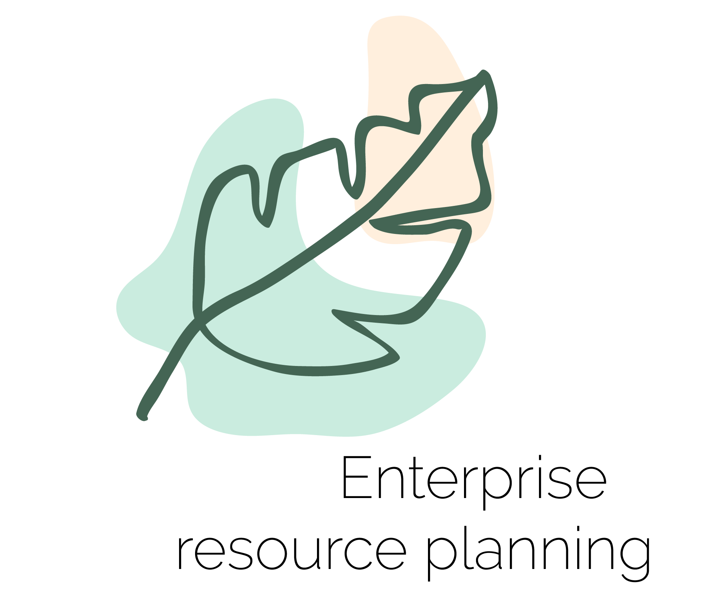

Project.

Optimizing the user experience. Using HTML, JavaScript and CSS to bring concepts to life.
Developing and maintaining the user interface. Implementing design on mobile websites. Creating tools
that improve site interaction regardless of the browser.
Developing and maintaining the user interface. Implementing design on mobile websites. Creating tools
that improve site interaction regardless of the browser.
I reckon through
the way people use something — whether digital or real-world
products, processes or interfaces — and then designs or redesigns
elements of that experience to be more user-friendly.
I need to make sure the user interface is beautiful and intuitive (meaning a person can navigate easily through it without having to think too much about what they're doing).
Freelance.

An ERP system can eliminate inefficiencies, wasted time and wasted resources, empowering your business to thrive and flourish. If you’ve been burdened by an inability to keep up with demand because you’re limited by conventional systems or stagnant legacy ERP systems, upgrading to a modern ERP system frees your business to realize its true growth potential.

the framework that is used to structure, plan,
and control the process of developing an information
system. A wide variety of such frameworks have evolved
over the years, each with its own recognized strengths
and weaknesses.
Several factors such as consistency, colours, typography,
imagery, simplicity and functionality all contribute to
good website design. When designing a website there are
many key factors that will contribute to how it is perceived.